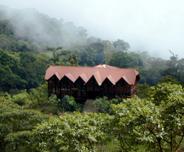

El Parque Natural Chicaque se encuentra ubicado al suroccidente de la sabana de Bogotá, en la vertiente occidental de la cordillera oriental y conforma la Micro cuenca alta de la quebrada la playa, dentro de la cuenca media del Río Bogotá, entre las coordenadas geográficas 74°18’25.109” y 74°19’25.187” de Longitud oeste de greenwich y 4° 36’21.215” a 4°37’42.907” de Latitud Norte. Las coordenadas planas de Gauss datum Bogotá para el parque son de 1.000.761 a 1.003.271 m Norte y de 973.064 a 974.915 m este. El área comprende aproximadamente 308.88 hectáreas, dentro de la vereda de Chicaque, Municipio de San Antonio del Tequendama, colindando con los municipios de Soacha y Bojacá en el Departamento de Cundinamarca (Valenzuela, 1997).
Presenta un gradiente altitudinal que va desde los 2.000 m.s.n.m. (Escuela de Chicaque) hasta los 2.720 m.s.n.m. (cerros de carrizal, alto de armadillos) (Valenzuela, 1997) con una temperatura promedio de 14.5° Centígrados. Debido a la posición geográfica de la reserva, en el área se presenta el Efecto Föhen, con un bosque nublado frío húmedo en la vertiente de barloventos y un ambiente frío subxerofítico en la de sotavento (Valdés, 1996). La vegetación pertenece a la interfase entre la selva sub andina superior (entre los 2.000 y los 2.400 m.s.n.m.) y la selva andina inferior (entre los 2.400 y los 2.720 m.s.n.m.), según la clasificación propuesta por Cuatrecasas (1989), o entre el bosque húmedo subtropical (hasta los 2.100 m.s.n.m.) y el bosque húmedo montano bajo (a partir de los 2.100 y hasta los 2.720 m.s.n.m.), según la clasificación de Espinal y Montenegro (1963)